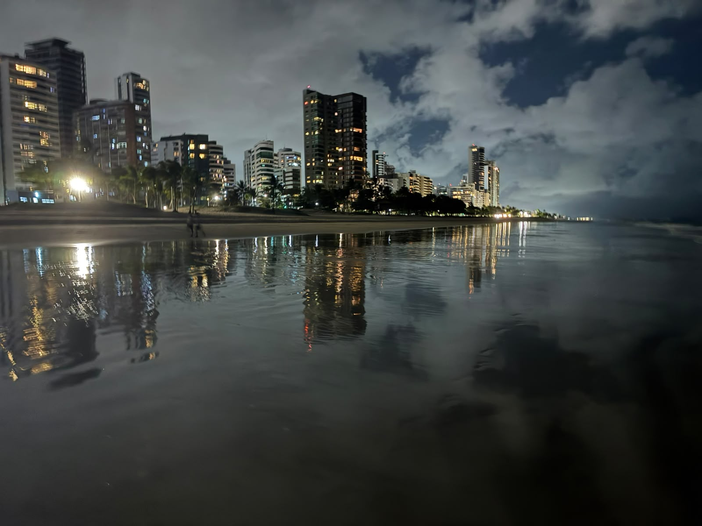
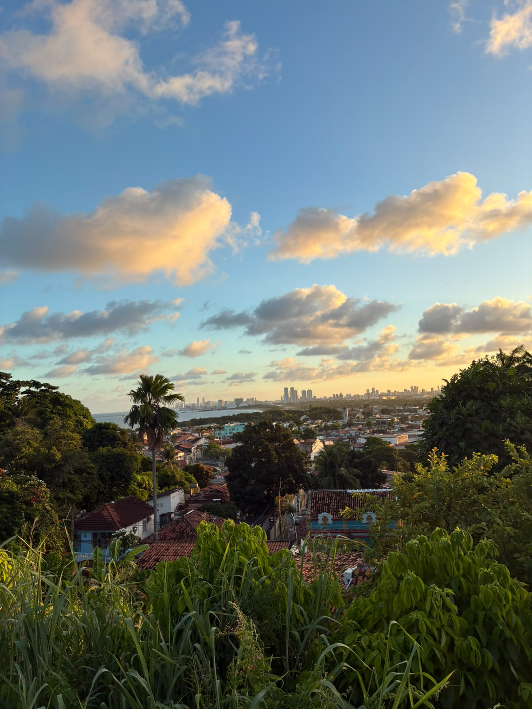
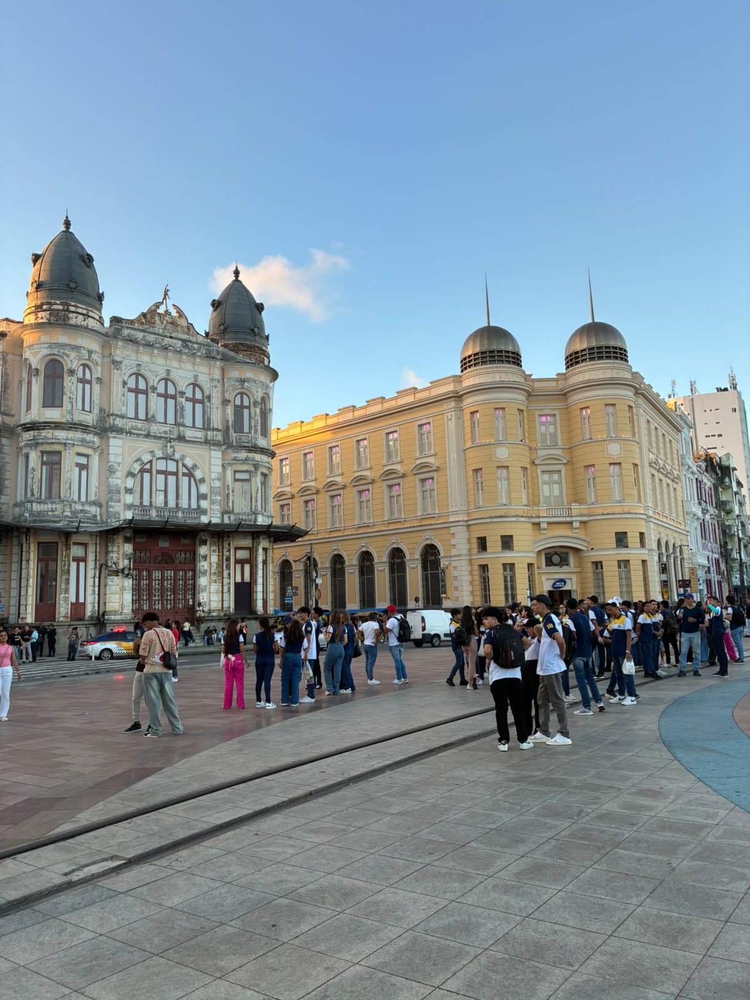

Capital de Pernambuco
O Recife tinha 1.488.920 habitantes no Censo 2022 do IBGE e é o município mais populoso do estado.
A cidade de verdade por trás do jogo.
O Recife tinha 1.488.920 habitantes no Censo 2022 do IBGE e é o município mais populoso do estado.
O nome vem dos arrecifes que acompanham o litoral e fazem parte da paisagem da cidade até hoje.
Cortado por rios como o Capibaribe e cheio de pontes, o Recife ganhou o apelido de Veneza Brasileira.
Nascido em Pernambuco, o frevo é Patrimônio Cultural Imaterial da Humanidade pela Unesco desde 2012.
O Recife é uma cidade baixa, cortada por rios e muito próxima do mar. Quando uma chuva forte coincide com a maré alta, a água demora mais para escoar, e é por isso que tanta gente olha a tábua de marés em dia de chuva.
Fotos: João Agostinho, eu mesmo


